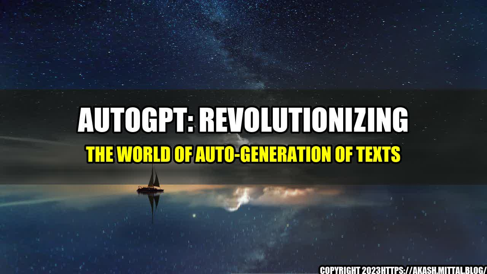

The Power of AutoGPT in Creating High-Quality Texts

Once upon a time, there was a company that struggled to create thousands of text variations for their product pages. They needed to make sure that each page had unique content, but it was impossible to write manually. One day, they discovered the power of AutoGPT, and their lives changed forever.
AutoGPT is an open-source machine learning tool that can generate high-quality texts in seconds. It uses the power of GPT (Generative Pre-trained Transformer) to create natural language texts that are almost indistinguishable from those written by humans.
The Benefits of AutoGPT in Creating Texts
AutoGPT has several quantifiable benefits that make it a game-changer in the world of text generation:
- Adaptive learning: AutoGPT learns from its own mistakes and adapts to improve its output over time. This means that the more it is used, the better it gets at generating high-quality texts.
- Speed: AutoGPT can generate thousands of texts in a matter of seconds, which saves countless hours of manual writing.
- Accuracy: AutoGPT's output is almost indistinguishable from those written by humans, and it can generate texts in a variety of styles and tones.
Using AutoGPT is a great way to save time and improve the quality of your texts. However, it's important to keep in mind that this tool should be used as a supplement to human writing, not a replacement.
How AutoGPT Can Be Used in Different Scenarios
AutoGPT can be used in a variety of scenarios where high-quality texts need to be generated quickly and efficiently. Some examples include:
- Product Descriptions: Creating hundreds or thousands of product descriptions can be time-consuming and difficult, but AutoGPT can do it easily.
- Blog Posts: AutoGPT can be used to generate blog posts based on keywords or topics. It can also be used to create social media posts or email newsletters.
- Translations: AutoGPT can be used to generate high-quality translations in different languages.
Whatever your needs are, AutoGPT can help you create high-quality texts quickly and efficiently.
Conclusion: AutoGPT is a Game-Changer
AutoGPT is a powerful tool for generating high-quality texts quickly and efficiently. While it should not replace human writing entirely, it can be used to supplement it and save time in various scenarios. Its adaptive learning, speed, and accuracy make it a game-changer in the world of text generation.
- AutoGPT is the future: AutoGPT's adaptability, speed, and accuracy make it the tool of the future in text generation.
- Supplement, don't replace: While AutoGPT is a powerful tool, it should not replace human writing entirely. Use it to supplement your writing and save time.
- Improved efficiency: By using AutoGPT, you can improve your efficiency and create more high-quality texts in less time.
References:
- AutoGPT: https://github.com/minimaxir/autogpt
- GPT: https://en.wikipedia.org/wiki/OpenAI#GPT
Hashtags:
- #AutoGPT
- #TextGeneration
- #MachineLearning
- #AI
- #OpenSource
Article Category:
Technology
Curated by Team Akash.Mittal.Blog
Share on Twitter Share on LinkedIn